2024 Jewelry Trends
Every year, Kool Concepts decodes the shifts shaping the jewelry world—looking to the past, tracking the present, and forecasting what’s next. 2024 is the year of bold expression: pieces that redefined everyday jewelry with a mix of nostalgia, maximalism, and playful experimentation. From chunky gold chains and colorful gemstones to bows, hearts, and sculptural forms, the trends celebrated personality through statement styling. It was a season of revival—where vintage inspirations collided with modern craftsmanship, and where jewelry became less about formality and more about joy, layering, and individuality.
At Kool Concepts, we didn’t just observe these movements—we manufactured them. Our team translated these trends into tangible designs, showcasing how analysis and craftsmanship come together to create pieces that resonate with the spirit of the time.
Eternal Brilliance
True Brilliance, Redefined for Today.
Eternal Brilliance is a celebration of modern luxury—where sustainability meets timeless design. Lab-grown diamonds are no longer a niche; they’ve become a symbol of conscious elegance, offering the same fire, clarity, and beauty as mined stones, but with a story that resonates with today’s values.
This collection reframes diamonds for a new generation: less about exclusivity, more about accessibility, individuality, and responsibility.
Why Now?
Lab-grown diamonds have crossed from niche to mainstream. Leading houses like Pandora, Tiffany & Co., and De Beers’ Lightbox have embraced them, while Vogue and Harper’s Bazaar highlight lab-grown as “the future of fine jewelry.”
Social platforms amplify this shift: Gen Z and Millennials are driving demand with #labgrowndiamonds trending on TikTok, and resale platforms report a spike in searches for ethical luxury. With 2024–2025 as a tipping point, lab-grown diamonds are no longer just an alternative—they’re the first choice.
Key Design Elements Across the Collection
Modern Classics, Reimagined
Modern classics reimagined with lab-grown diamonds—blending timeless silhouettes (solitaires, hoops, tennis lines) with innovative touches like mixed metals, architectural forms, and versatile layering.


 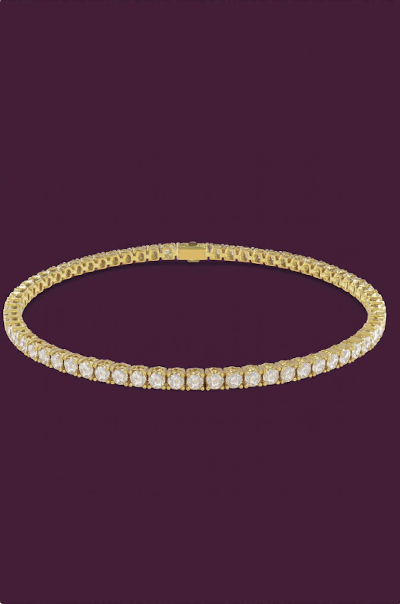
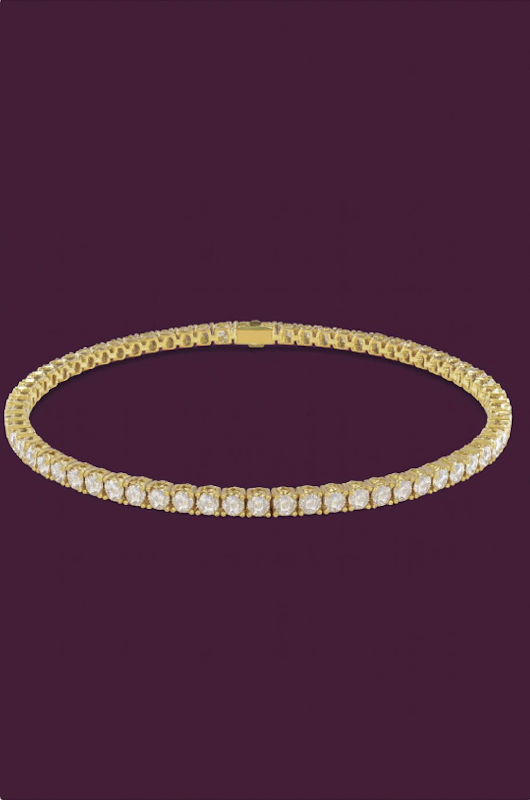
Fusion
Where Contrasts Create Harmony
Fusion celebrates the art of contrast—where gold, silver, and rose tones collide to create something entirely new. Mixing metals was once considered unconventional, but in 2024 it has become a declaration of individuality, freedom, and modern elegance.
This collection invites wearers to break away from the status quo of “matching sets” and instead embrace layering, stacking, and styling across tones. By weaving together diverse metals,Fusion reflects the complexity of contemporary identity—fluid, versatile, and unapologetically personal.
Why Now?
Breaking Away from Tradition: Mixed metals have moved from unconventional to must-have. Runways from Chanel to Proenza Schouler showcased gold and silver worn together, while Harper’s Bazaar and Who What Wear spotlighted stacking across tones as a 2024 jewelry essential.
Social media amplifies the shift: TikTok stylists pair rose gold chains with silver hoops, making contrast the new language of self-expression. What was once rule-breaking is now trend-making, embraced for its versatility and individuality.
Key Design Elements Across the Collection
Crafted in Contrast
The Fusion Collection thrives on contrast, blending yellow, white, and rose gold into designs that feel both timeless and boldly modern. Each piece is crafted to encourage layering and stacking, allowing wearers to mix, match, and build looks that reflect their individuality. By breaking away from rigid rules of uniformity, the collection transforms metal into a language of versatility, self-expression, and everyday elegance.
 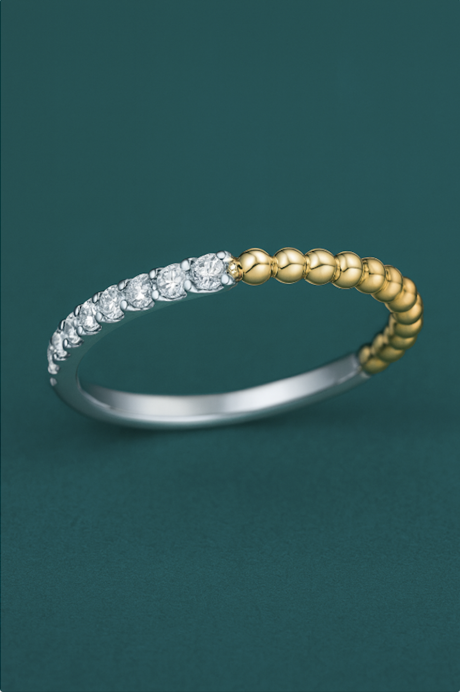
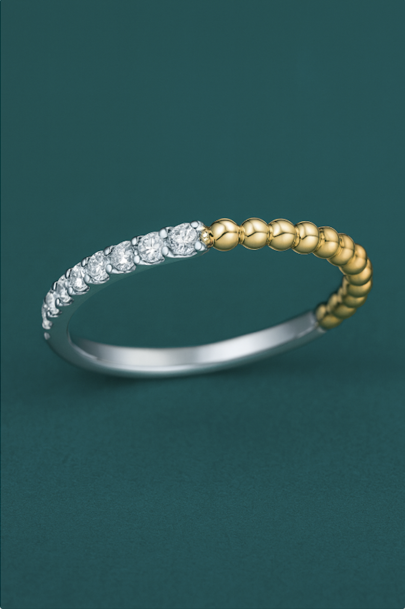


 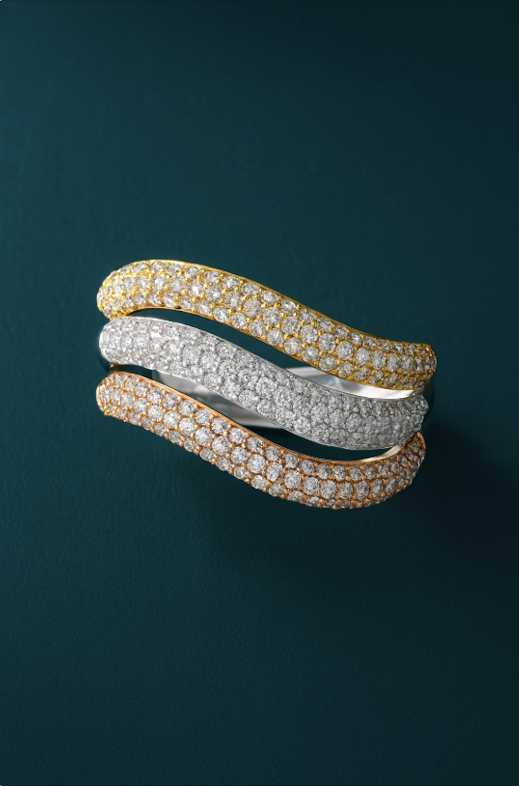
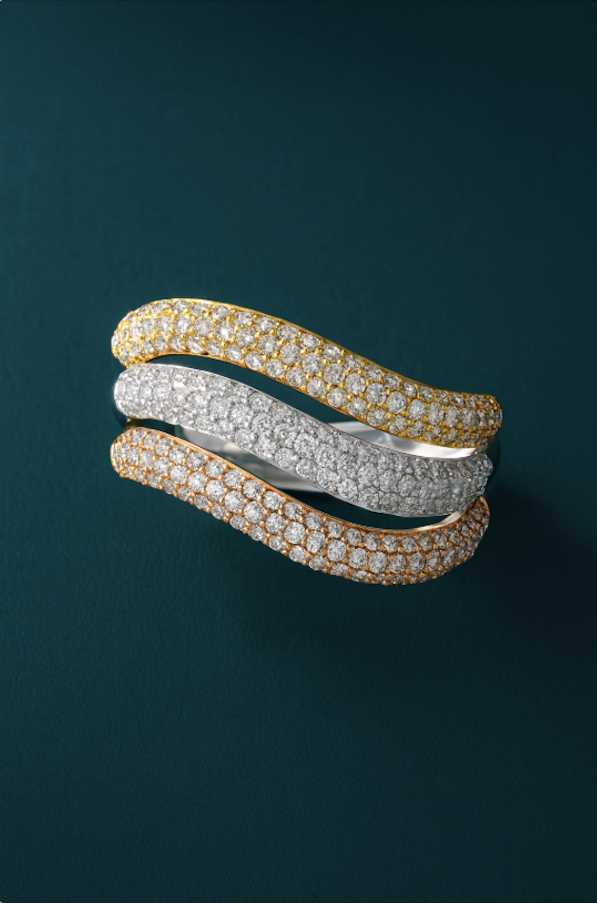
 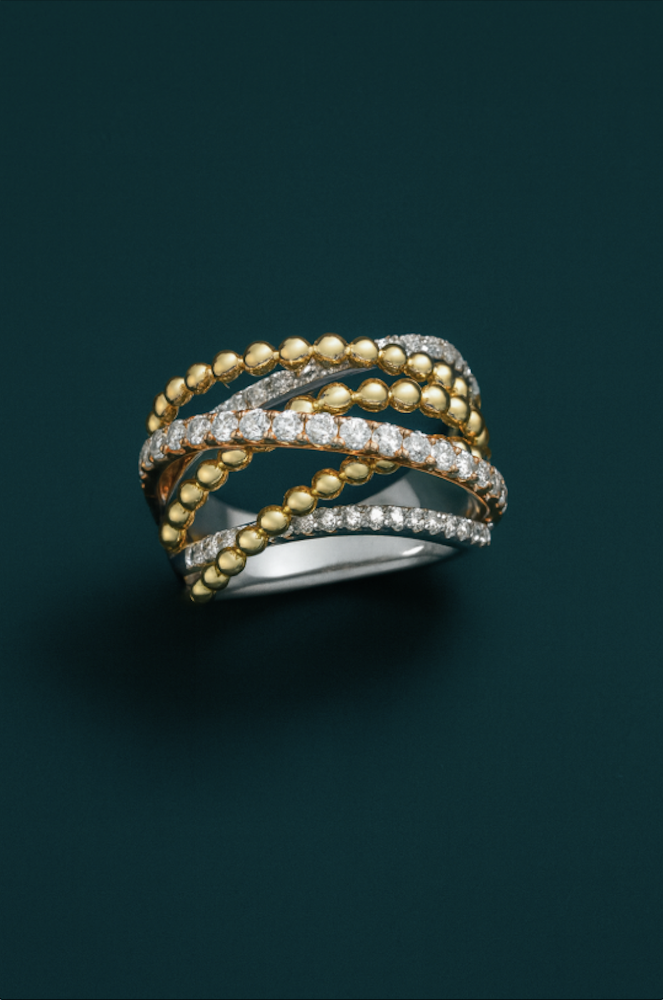
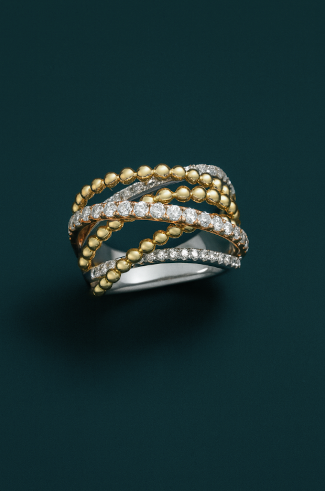
Sacred Forms
Adorned with Meaning, Guided by Spirit
Sacred Forms honors the deep connection between jewelry and meaning, where each piece is more than adornment—it’s a symbol, a talisman, a personal reminder. In an age where individuality reigns, jewelry is increasingly chosen not just for beauty but for the stories, values, and intentions it carries.
From celestial symbols to ancient motifs and protective charms, this collection embraces the rising desire for spirituality and self-expression, turning jewelry into a wearable reflection of the inner self.
Why Now?
In a cultural moment where individuality reigns supreme, jewelry has become a vessel for meaning, identity, and intention. Social media has amplified this movement—#spiritualjewelry and #symbolicstyle trends have racked up millions of views, and TikTok creators showcase charm necklaces, evil-eye pendants, and zodiac medallions as everyday essentials.
Influencers like Bella Hadid and Hailey Bieber have been spotted layering symbolic pendants, while fashion outlets like Harper’s Bazaar and Who What Wear report on the rise of “personal talismans” as must-have accessories. What was once considered mystical or niche has entered the mainstream, signaling a shift toward jewelry as wearable spirituality. Across time and traditions, symbolic jewelry has carried meaning; today’s revival is about reclaiming that depth in a modern way.
Key Elements Across the Collection:
Wear What You Believe In
The Sacred Forms Collection speaks in symbols—moons and stars whispering guidance, charms guarding with quiet strength, and natural forms blooming with renewal. Each design is a modern talisman, crafted not only to adorn but to awaken; jewelry that carries intention, channels spirit, and reflects the soul of the wearer.

 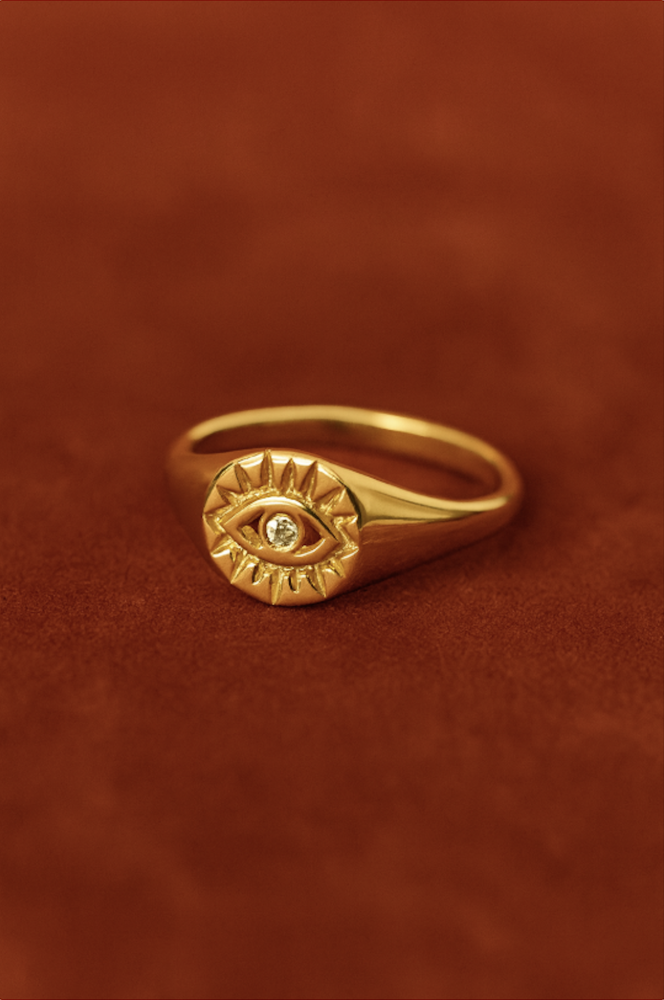
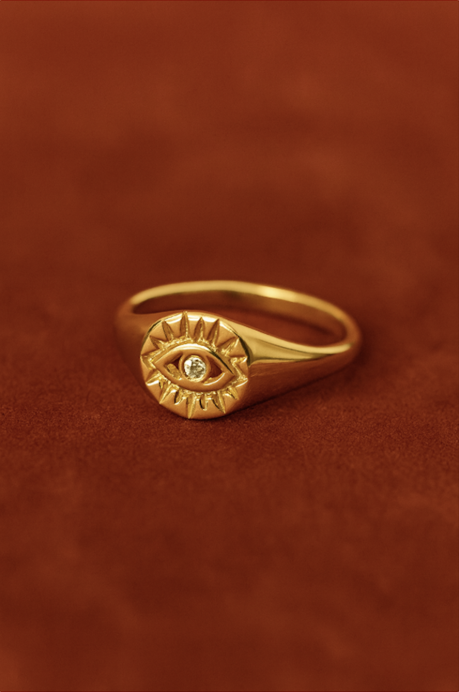
Timeless Reverie
Yesterday’s Treasures, Reborn for Today.
Timeless Reverie reimagines the past through a modern lens, bringing vintage and retro styles into today’s conversations on individuality and meaning. From bold ’70s gold chains to delicate ’90s minimalist silhouettes, this collection celebrates nostalgia.
Each piece feels familiar yet fresh—bridging eras, honoring heritage, and giving wearers a way to express their personal story through the echoes of history.
Why Now?
Nostalgia is driving fashion’s current moment. Runways at Prada, Miu Miu, and Saint Laurent revived retro silhouettes, while Vogue and Marie Claire spotlighted heirloom-inspired chains, lockets, and brooches as 2024 essentials. On TikTok, hashtags like #vintagejewelry surged, and “charm bars” became cultural hotspots. With resale platforms reporting spikes in vintage gold and talismanic pendants, it’s clear: jewelry today isn’t just adornment—it’s memory, identity, and meaning reborn for a new era.
The cyclical nature of fashion has always brought past decades back into focus, but today it comes with an emotional resonance: consumers are searching for grounding and connection in their style. Jewelry with heritage details and retro flair satisfies this craving, offering comfort, storytelling, and identity in wearable form.
Key Elements Across the Collection:
Heritage with a Modern Heartbeatt
The Timeless Reverie Collection blends the bold spirit of chunky gold chains, the refined geometry of Art Deco, and the understated elegance of ’90s minimalism into a tapestry of revival. Each piece is designed as a modern heirloom—vintage in influence but renewed in craftsmanship—inviting wearers to layer eras, honor heritage, and express individuality through the language of the past reborn.

Revival of Charms
Charms Reimagined: Playful, Personal, Powerful.
Charms are back as the ultimate form of wearable self-expression. Once nostalgic keepsakes, they’ve been transformed into bold, playful, and deeply personal statements. Layered on necklaces, bracelets, or even bags, charms today embody maximalism and individuality—each piece a token of identity, memory, or mood.
Beyond jewelry, viral bag charms and “charm bars” have turned charms into social and customizable accessories, proving their versatility and making them one of the most powerful vehicles of storytelling in fashion.
Why Now?
2024 marked the official comeback year of charms, fueled by TikTok virality, Gen-Z’s nostalgia, and a cultural craving for personalization. From Vogue to Byrdie, fashion authorities spotlighted the resurgence of charm bracelets and necklaces, while “charm bars” became hubs for custom creations. Online searches surged, with Lyst reporting triple-digit growth in charm interest and Dior’s charms skyrocketing 750% month-over-month. This moment is bigger than nostalgia—it’s about individuality, storytelling, and self-expression, aligning perfectly with today’s demand for fashion that is both personal and forward-thinking.
Key Elements Across the Collection:
Charms Reimagined: Playful, Personal, Powerful
The key elements of the collection center on personalization, maximalist layering, and playful versatility, with charms designed to be mixed, matched, and styled across necklaces, bracelets, and bags. Each piece acts as a storytelling token—capturing identity, memory, or mood—while embracing the cultural shift toward individuality and self-expression.
 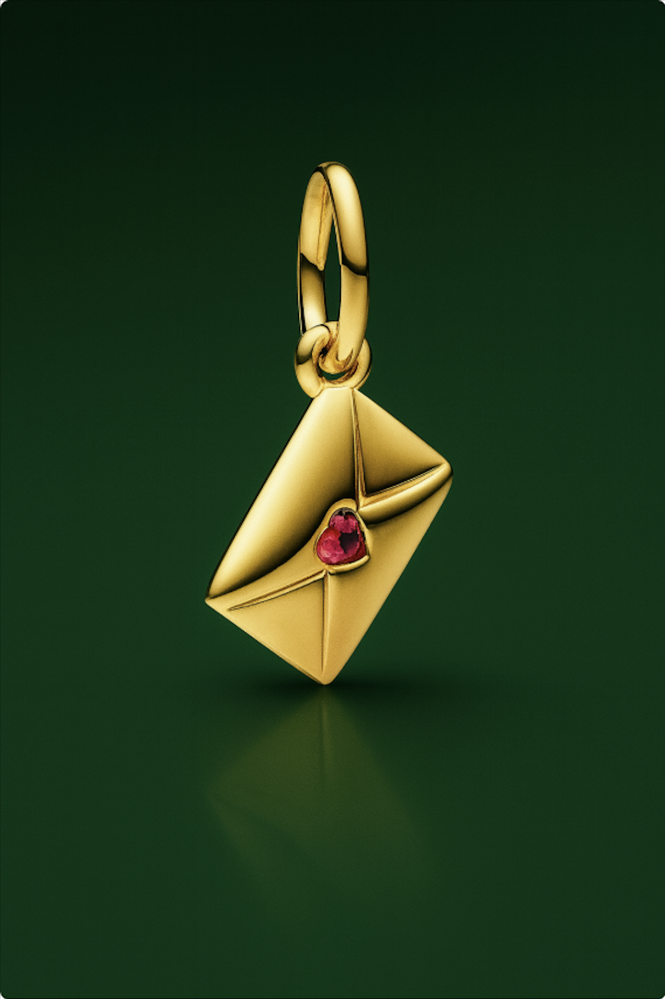
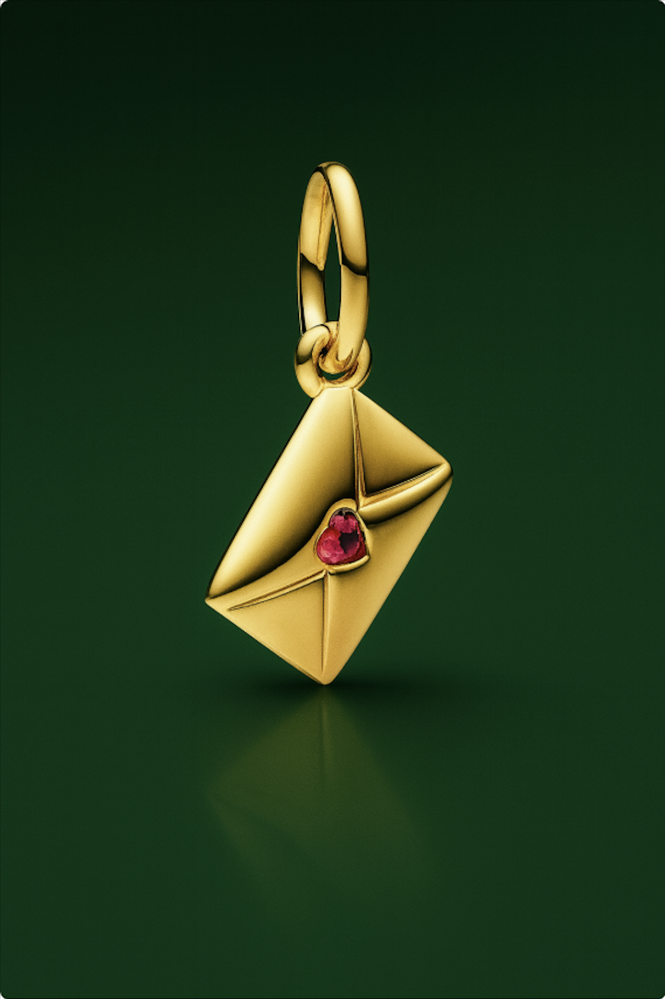

Vintage Revival & Statement Pieces
Heritage Reimagined, Statement Redefined
Vintage Revival & Statement Pieces is a celebration of history’s artistry reborn for today’s icons. Drawing inspiration from heirloom brooches and bold jewels of past eras, this collection channels opulence with a modern edge. These designs honor tradition while reinterpreting it through daring proportions, intricate detailing, and a sense of self-expression that resonates with contemporary style seekers. This collection reframes vintage jewelry for today: less about nostalgia, more about empowerment, individuality, and storytelling through adornment.
Why Now?
The return of statement pieces has surged across runways and red carpets. From Gucci and Schiaparelli showcasing oversized brooches to celebrities like Rihanna and Lady Gaga reviving vintage silhouettes, bold jewelry is reclaiming its place in modern wardrobes. Editorials in Vogue and W Magazine celebrate the brooch as “the accessory of the moment,” while TikTok style creators spotlight maximalist jewels as everyday essentials.
Gen Z and Millennials are driving this revival, pairing statement brooches with blazers, dresses, and even denim jackets—proof that luxury no longer hides in safes, it lives in daily wear. With fashion’s current embrace of maximalism and individuality, vintage-inspired statement pieces are not just relevant, they’re essential.
Key Elements Across the Collection:
Modern Vintage, Reborn
Classic brooches reimagined as bold, versatile accents—adorned with intricate filigree, sculptural motifs, gemstone clusters, and dramatic silhouettes. The collection blends old-world glamour with new-world styling: layering brooches across lapels, hats, and bags, or styling them as conversation-starting centerpieces. Versatile yet expressive, each piece transforms the ordinary into the unforgettable.

Pearls Reimagined
Timeless Elegance, Made New.
Pearl Reimagined is a celebration of one of jewelry’s oldest symbols of refinement—reborn for a modern age. No longer confined to tradition, pearls take on fresh forms in bold silhouettes, unexpected pairings, and contemporary styling. This collection honors their heritage of grace while reframing them as versatile, expressive, and fashion-forward treasures for every generation.
This collection reframes pearls for today: less about formality, more about creativity, individuality, and modern sophistication.
Why Now?
Pearls have entered a renaissance, sweeping across runways and red carpets with new audacity. Houses like Chanel and Dior drape them in sculptural cascades, while Simone Rocha and Givenchy reimagine them as statements of youth and edge. Editorials in Vogue, Harper’s Bazaar, and The New York Times herald pearls as “the comeback of a century”—a bridge between classic refinement and modern rebellion.
From Rihanna to Harry Styles, today’s icons prove pearls transcend gender and occasion, styled as effortlessly with a leather jacket as with couture gowns. Social platforms echo the sentiment: #pearlcore continues to trend, with Gen Z championing pearls as everyday essentials, not occasional heirlooms. At this cultural inflection point, pearls are no longer restrained by the past—they define the now.
Key Elements Across the Collection:
Classic Glow, Contemporary Twist
Traditional pearls reworked into bold new designs—layered chokers, baroque pearl drops, sculptural rings, and pearl-accented hoops. Mixed with modern elements like gold links, enamel details, and geometric settings, these pieces merge timeless luster with trend-driven innovation. The collection balances restraint and drama, offering pearls as both subtle accents and unforgettable statement pieces..